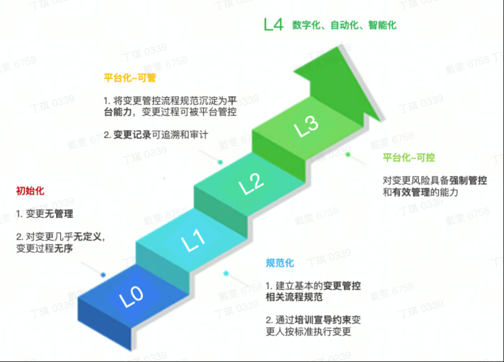

概述
- SRE 稳定性专题相关机制概述
一不出问题的基线
作为一个 SRE，想做到“不出问题”这个基线，关键还是要靠大家，如何靠大家呢？就是要落地一套稳定性的机制体系，用机制的严格执行来约束大家，这套机制也必须得到团队 leader 的全力支持，不然无法展开，这套机制包括：
- 稳定性意识
- 日常值班机制
- 报警响应机制
- 复盘机制
- 故障演练机制
- 故障奖惩机制
- 大促保障机制
比如，如果总是 SRE 人员去响应报警和值班，就会非常疲惫劳累，人不可能永远关注报警，那怎么办呢？可以从报警机制、自动化、值班机制 3 个方面入手：
一方面，让报警更加准确和完善，减少误报和漏报，防止大家不必要的介入，另一方面产出自动化机器人，自动进行一些机器重启，工单查询，问题简单排查之类的工作，还有就是建立值班轮班，让每个人都参与进来，既能让大家熟悉业务，又能提高每个人的稳定性意识。
对于 SRE 来说，指定机制并且严格落地，比事必躬亲更加重要。上面这些机制，将在后面的章节中详细论述。
二 稳定性团队工作子项
1 工作子项
着重介绍稳定性保障方案子项
- 监控报警
-
- 监控大盘(是否具备好用易用大盘)
-
- 各个组件容量水位提前预警
-
- 外部拨测(模拟用户行为)
- 容灾建设和演练
- 变更管控
-
- 包括服务版本迭代
-
- 配置变更
-
- 各类自建运维平台、运营平台
- 应急响应机制
- 值班机制
- 容量管理(成本优化)
- 巡检(容量水位巡检、依赖项隐患发现)
2 拨测和巡检的区别
- 拨测是指模拟用户行为，定期从产品外部发起 API 调用, 看是否正常
- 巡检是指 SRE 主动巡检各个组件的容量水位, 看是否处于一个比较健康的状态
三 稳定性现状怎么梳理？
主要分如下模块

主要考核 MTTR 达标率和事故主动发现率.
- 比如规定 MTTR 为
1-5-10, 那么有多少事故处理过程是符合该规定的, 占总体事故数比例为多少. - 事故主动发现率很好理解, 就是有多少事故是技术团队主动发现的, 占总体事故数比例为多少.
四 稳定性目标怎么制定？
1 关键目标
-
1 事故数目标
-
- 1 XX 全年事故数目标同比下降 20% 左右
-
- 2 XX 全年某个等级以上事故数不超过 1
-
2 事故 MTTR 目标
-
- 1 全年所有服务端事故 30min 恢复率 ≥ 40%，其中下半年 ≥ 50% // MTTR 3-15-30
-
- 2 全年所有客户端事故 2d 恢复率 ≥ 60%，其中下半年 ≥ 80% // MTTR 1-x-2
-
- 3 上述所有事故中涉及外部客户有感的事故 30min 恢复率 ≥ 50% // MTTR 3-15-30
-
3 其他关键目标
-
- 1 全年事故主动发现率 ≥ 60%
-
- 2 各类变更系统或流程在 Q4 结束前变更成熟度评级 L3 达标率 ≥ 90%，L3+ 达标率 ≥ 40%
-
- 3 各业务单元的 SLI 指数可衡量且 ≥ 99%
五 稳定性从 1 到 N 提升
-
分为 5 个维度去治理,分别是变更管控、监控、容错、容灾、稳定性文化建设
1 变更管控和变更成熟度提升

1.1 变更不合规治理
1.2 灰度建设
1.3 变更质检
2 监控专项
3 容错专项
3.1 强弱依赖梳理
3.2 强弱依赖项预案建设
3.3 强弱依赖项预案演练
4 容灾专项
5 稳定性文化
5.1 红黑榜、年度奖项、个人奖项
5.2 团队分享
6 研发质量
具体心得参考
| 问题 | 治理项目 |
|---|---|
| 边缘机房故障 | 边缘机房稳定性治理、集群并池、容灾容错 |
| 边缘集群容量问题 | 一键限流 |
| 客户端版本问题 | 准出平台、客户端稳定性专项 |
| 变更发版引起故障 | 华佗质检、变更管控、指标归因 |
| 边缘机房布点问题 | 边缘机房稳定性治理、三线机房 |
| 服务依赖基础组件异常 | 故障注入演练平台 |
| 中心机房故障 | 容灾容错 |
六 稳定性运营怎么运营?
- 稳定性红黑榜
- 观测中心（SLI 指标收敛统一观测）
- 应急响应收敛
产品稳定指标
怎么体现稳定性建设和治理的效果
| 对应项目 | 指标 | 备注 |
|---|---|---|
| 事故治理 | MTTR/MTBF/每半年事故数量 | 1 |
| 监控告警 | SLO 达标率 | 我们每个月 SLO 达标率是多少，达标时间/总时间 |
| 监控告警 | 告警及时性和有效性 | 我们每个月 SLO 达标率是多少，达标时间/总时间 |
| 变更管控 | 变更符合规范数量 | |
| 变更管控 | 灰度能力建设 | |
| 变更管控 | 白屏化建设 | |
| 变更管控 | 变更质检能力建设 |
比如 RTC 产品的 SLI
- 关注用户的体验质量
- 5s 进房成功率
- 80ms 音频卡顿率
- 500ms 视频卡顿率
- 音视频首帧发送成功率
- 音视频首帧解码成功率
- 400ms 音视频网络传输延时达标率
- P0 档位 99.5%（调优档位 99.9%）
比如点播产品的 SLI
- 上传成功率
- 播放成功率
事故治理核心指标
- 核心指标
- P0&P1 重大事故数额度达标 (≤ 2 额度，2P1 或 1P0）
- 全年事故分达标 (≤ 400 分)
- 变更低级事故占比达标 (≤ 5%) 且 0 红线事故
- 事故主动发现率达标 (≥ 70%)
- 参考指标
- P0 改进项按时完成率达标 (≥ 85%)
- 应急 5 分钟响应率达标 (≥ 80%)
- 事故 30 分钟通报率达标 (≥ 80%)
- 事故 MTTR 90 分位值降低 30% (目标 ≤ 90 分钟)
七 活动重保稳定性怎么做
- 主要分为容量和预案两条线
八 稳定性从 0 到 1 建设
事故前预防
- 变更管控
- 变更质检
- 降级预案
- 容量管理
- 服务治理
事故感知
- 监控专项
- SLI 告警覆盖
- 客诉感知
- OnCall 机制
事故中定位和止损
- 定位大盘
- 变更查询和看板
- 变更回滚
- 预案执行